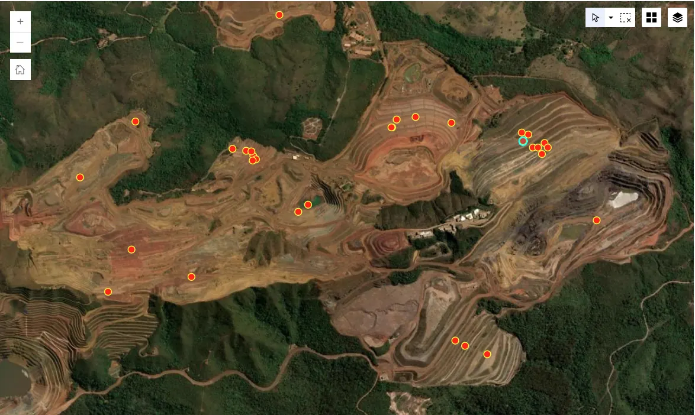
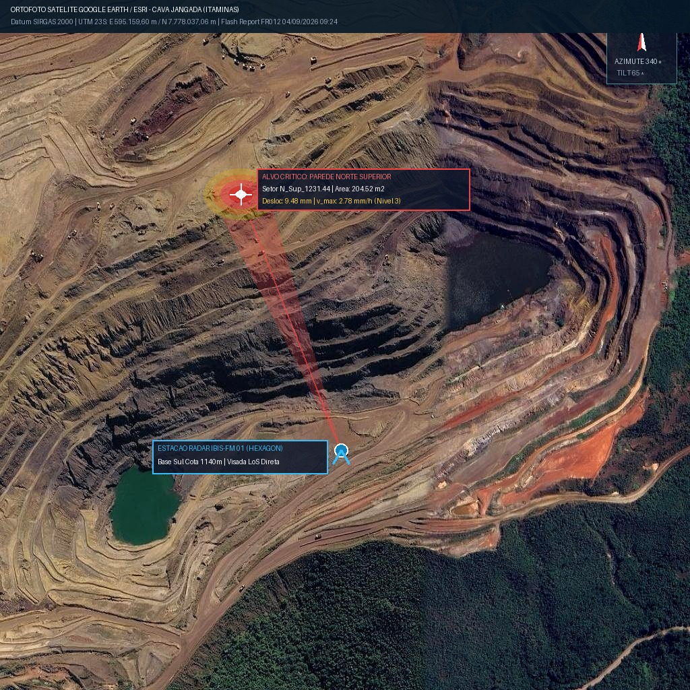

cloud_off
Modo Offline Inteligente
Cache 100% Ativo
Storage Local: SQLite IndexedDB • 0 pendências
explore
GPS SIRGAS 2000
±0.8m RMS (Fix)
UTM 23S E: 602.412m • N: 7.748.119m (Z: 450.2m)
terrain
Mina Cava Jangada • Frente B1/B4
MN
Maycon N.
Auditor Responsável
filter_center_focus
Instrumento em Medição Ativa
Piezômetro Casagrande: PZ-02
Cota da Boca (m)
450.20 m
Cota da Ponta (m)
425.20 m
Prof. Total Furo
25.00 m
metros
history
Última Medição Oficial: 11.48 m (Registrada em 12/05/2024 às 09:30). Variação: -0.03 m (Estável)
Cota N.A. Real
water_drop
438.75
m
Cota Boca - Prof. Medida
Poro-pressão (u)
speed
132.8
kPa
γw • (Cota NA - Cota Ponta)
Enquadramento TARP
verified_user
Nível Normal
Alerta N1 em Cota > 442.00m
3
Inspeção Visual do Entorno & Evidências
Registros Fotográficos com Carimbo de Auditoria
2 Fotos Obrigatórias

PZ-02 • 11.45m • UTM 23S: 602412 / 7748119
Az: 142° SE • 14/05/2024 14:22:04 BRT
Boca do Tubo & Leitura

PZ-02 Entorno • Berma B4 • Az: 218° SW
GPS ±0.8m • 14/05/2024 14:22:50 BRT
Panorâmica do Talude
4
Assinatura Digital & Fechamento
CREA-MG 184.992/D • SHA-256 Validado
check_circle
Registro Armazenado!
Leitura do PZ-02 gravada na memória local do tablet.